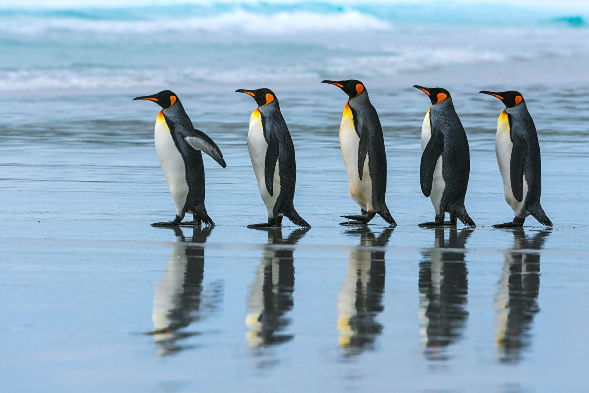
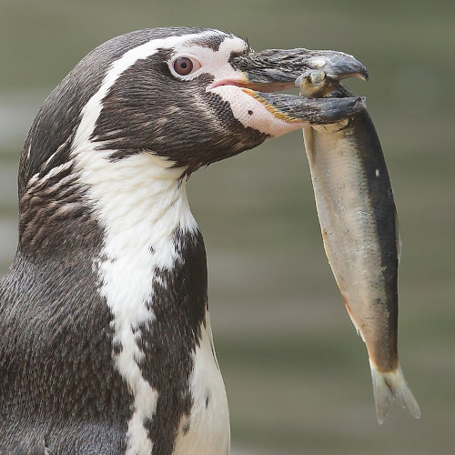
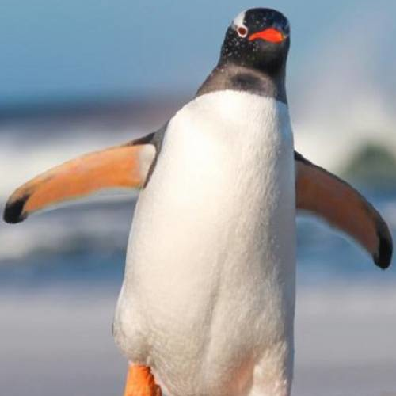

Un espacio virtual dedicado al pingüino...
Los pingüinos, icónicos habitantes de las regiones polares, son aves marinas no voladoras adaptadas a la vida en el medio acuático. Con su característico aspecto blanco y negro, y su elegante forma de deslizarse sobre el hielo, estos animales han cautivado la imaginación de personas de todas las edades.
Aunque la imagen más común de los pingüinos proviene de la Antártida, estas aves también se encuentran en otras regiones, desde las islas subantárticas hasta las costas de Sudáfrica, Australia, Nueva Zelanda y América del Sur.
Los pingüinos son conocidos por su habilidad para nadar rápidamente y bucear a grandes profundidades en busca de alimento, principalmente peces y krill. Su cuerpo aerodinámico y sus alas modificadas les permiten desplazarse ágilmente bajo el agua, mientras que en tierra firme se desplazan con torpeza, pero con una graciosa determinación.
Estas aves son también conocidas por su vida en colonias, donde se reúnen en grandes grupos para anidar, reproducirse y protegerse del frío extremo. Además, muchos pingüinos muestran un fuerte sentido de la fidelidad hacia sus parejas y crías, participando activamente en el cuidado de las mismas.
Sin embargo, los pingüinos enfrentan numerosas amenazas, incluyendo la pérdida de hábitat, la contaminación marina, la pesca excesiva y el cambio climático. A pesar de estos desafíos, estas fascinantes aves continúan inspirando admiración y respeto en todo el mundo, recordándonos la importancia de proteger y conservar la diversidad de la vida marina.
Puedes revisar las siguientes páginas externas pertenecientes a fundaciones o a la academia si deseas expandir tu conocimiento: